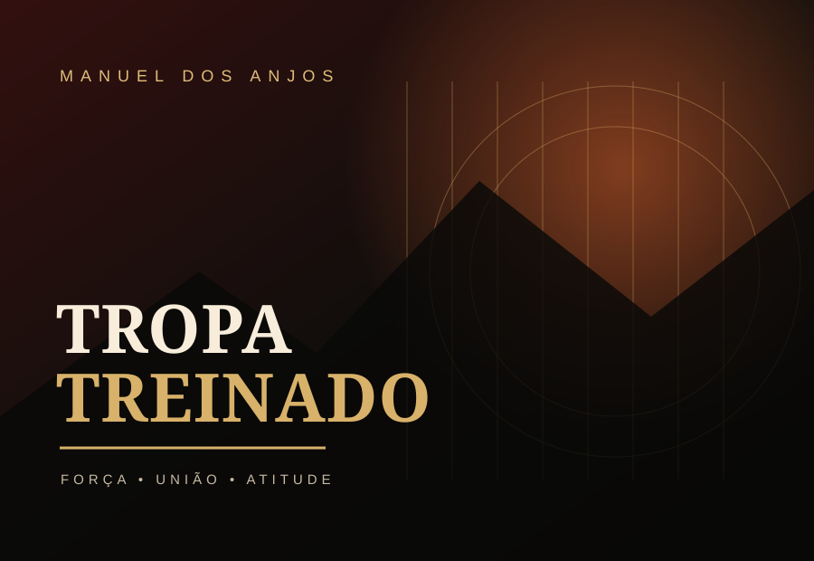
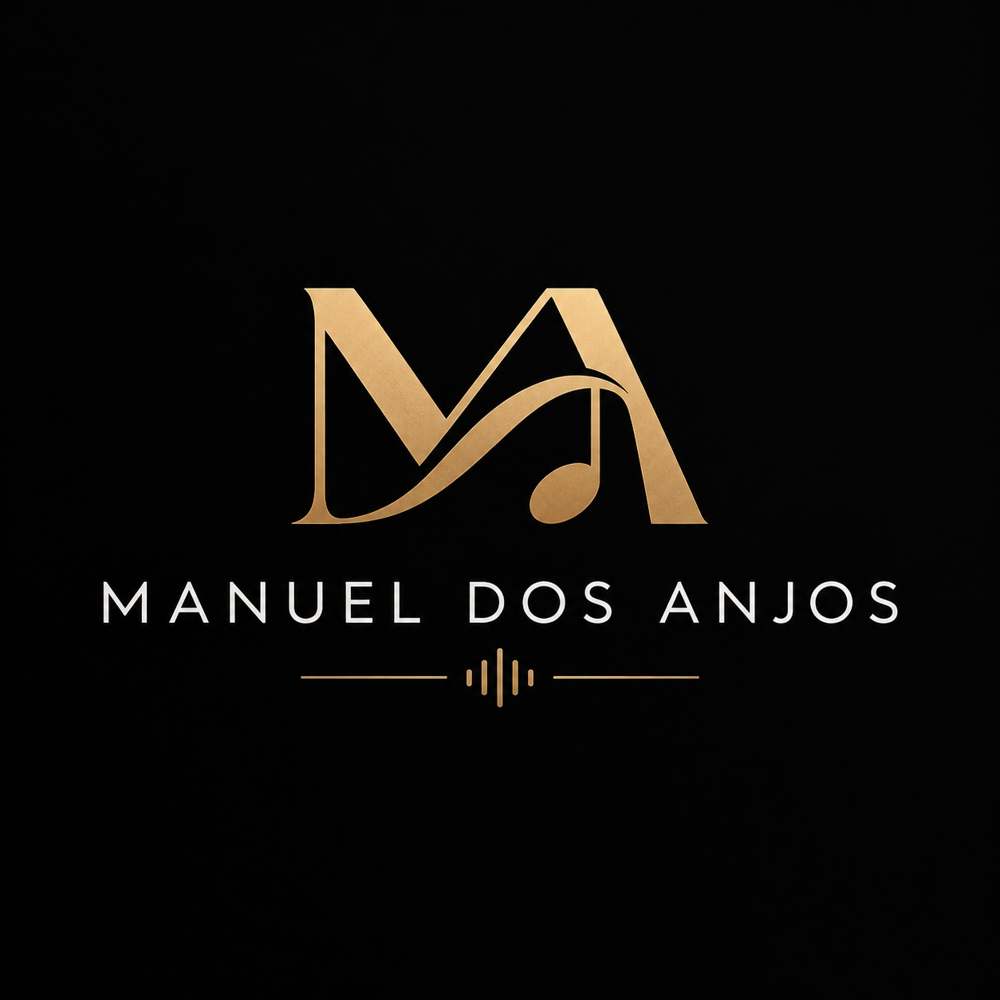
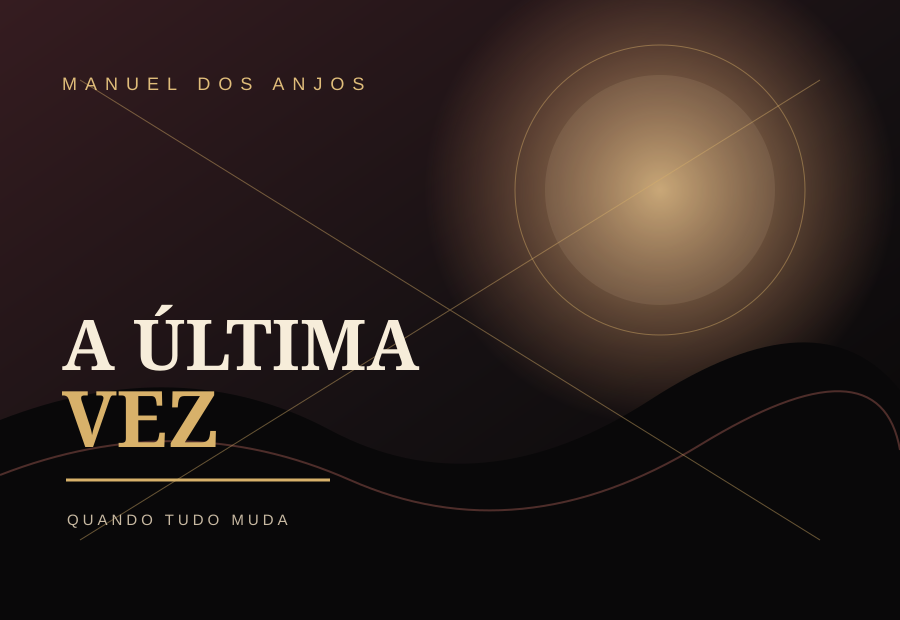
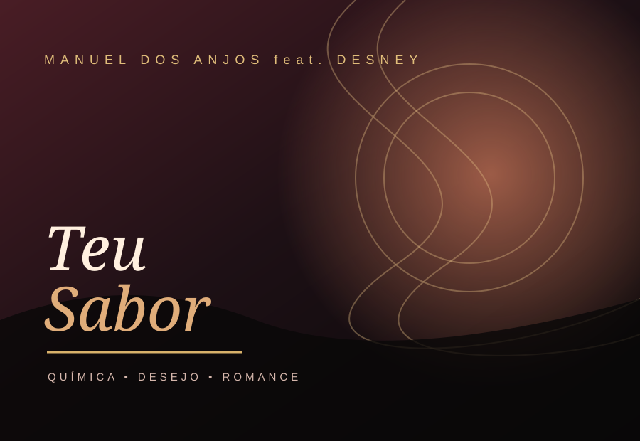

01 / SINGLESingle
Tropa Treinado
Uma faixa com atitude, união e confiança. A energia de quem conhece o seu caminho e segue firme ao lado dos seus.

MANUEL DOS ANJOSMÚSICA É A MINHA VOZ
'">Explore os sons de Manuel Dos Anjos. Escolha uma faixa e ouça diretamente nesta página.

01 / SINGLEUma faixa com atitude, união e confiança. A energia de quem conhece o seu caminho e segue firme ao lado dos seus.

02 / SINGLEUma canção sobre um momento decisivo, sentimentos intensos e a escolha de encerrar um capítulo que já não pode continuar.

03 / COLABORAÇÃOUma música de vibração romântica, feita para celebrar a atração, a química e a memória especial de alguém.
Uma casa digital para a música de Manuel Dos Anjos — um espaço para descobrir faixas, ouvir lançamentos e partilhar cada som. Volte para acompanhar as próximas novidades.
Partilhe a sua faixa favorita ou entre em contacto para novidades, atuações e colaborações.
Falar pelo WhatsApp ↗